El Popocatépetl (en náhuatl: popocatepetl, el cerro que humea popoca, humear; tepetl, cerro)? es un volcán activo localizado en el centro de México, en los límites territoriales de los estados de Morelos, Puebla y México. Se localiza a unos 72 km al sureste de la Ciudad de México, 43 km de Puebla, 63 km de Cuernavaca, y 53 km de Tlaxcala.
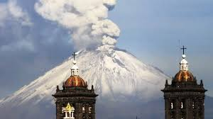
Tiene una forma cónica simétrica y está unido por la parte norte con el Iztaccíhuatl mediante un paso montañoso conocido como Paso de Cortés. El volcán tiene glaciares perennes cerca de la boca del cono, en la punta de la montaña. Es el segundo volcán más alto de México, con una altitud máxima de 5500 metros sobre el nivel del mar, sólo después del Citlaltépetl de 5610 msnm.
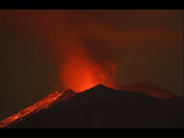
Ubicación El Popocatépetl se encuentra a 55 kilómetros (menos de 15 millas) de la Ciudad de México y a 45 de la de Puebla, En el Parque Nacional Izta-Popo. En la Sierra Nevada, se alza el Popocatépetl, en los estados de México, Puebla y Morelos. Altura 5,452 m. de altura sobre el nivel del mar. 17,887 pies. Su cráter mide en la parte más ancha 612 metros y en la más angosta 400. El cráter tiene una máxima profundidad de 505 metros y es el vértice donde limitan tres estados: México, Puebla y Morelos Es el segundo más alto de nuestro país; el primero lo ocupa el Pico de Orizaba o Citlaltépetl con 5,747 m y el tercero el Iztaccíhuatl o Ixtaccíhualtl, con 5,286 m de altura. Las dos principales cimas del Popo son el Pico Mayor y el Espinazo del Diablo, ambos alrededor del cráter. Forma parte del Sistema Volcánico Transversal
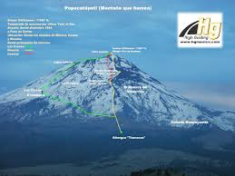De apariencia casi simétrica, cubre una superficie de 283,192.53 hectáreas y tiene una altura de 5,426 metros sobre el nivel del mar. Posee un cráter elíptico de paredes empinadas con una profundidad de 150 metros desde el labio inferior, un diámetro mayor de 900 metros y un ancho total de 400 x 600 metros. El paisaje en la zona que rodea al Popocatépetl contiene varios tipos de ecosistemas con rica variedad de flora y fauna. Hay bosques mixtos de pino, oyamel y encino, donde coexisten hasta 1,000 especies de plantas. Sobre el cono, principalmente cerca de la boca, se encuentran glaciares que durante los últimos años han disminuido.
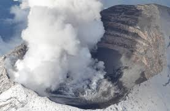 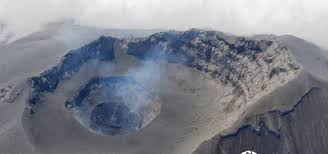Monitoreo Volcánico Popocatépetl *En conjunto con los institutos de Geofísica e Ingeniería de la UNAM y con la colaboración del U.S. Geological Survey. *CENAPRED
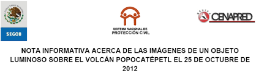 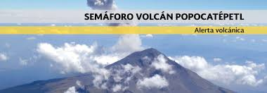
No humedecer la ceniza a fin de evitar taponamientos en el sistema de alcantarillado Mantén la calma. Utiliza medios electrónicos y de comunicación para obtener información confiable que den las autoridades de Protección Civil sobre la caída de ceniza y atiende siempre sus instrucciones. No realices actividades al aire libre y si es posible no salgas. Cierra puertas y ventanas y coloca toallas o trapos húmedos en las rendijas. Si tienes que salir cúbrete con un pañuelo o tapabocas, limpia ojos y garganta con agua pura. Para los ojos, usa lentes protectores, especialmente si usas lentes de contacto. Ten a la mano una linterna y pilas. La ceniza volcánica puede ser resbaladiza, sobre todo cuando está mojada. Toma las precauciones necesarias. Cubre tinacos, cisternas y depósitos de agua. Barre y retira la ceniza de techos, azoteas, patios y calles, deposítalas en bolsas y no permitas que se vaya al drenaje. Si es posible no conduzcas, si tienes que hacerlo, hazlo a baja velocidad y con las luces encendidas, ya que la ceniza dificulta la visibilidad y provoca que el pavimento se vuelva resbaloso. Ante la caída de ceniza volcánica evita consumir alimentos en la vía pública. Si permaneces expuesto por algún tiempo a las cenizas volcánicas, al ingresar a tu casa se recomienda cambiar de ropa. Durante la caída de ceniza volcánica, evita que los menores realicen actividades al aire libre. Mantén a tus mascotas en un lugar techado al igual que sus alimentos. Si tus macotas salen, cepíllalos antes de permitirles la entrada nuevamente. La ceniza puede ser usada para parques, jardines, macetas o tierras de cultivo, ya que es rica en minerales. No repitas ni difundas rumores. La ciudad de Puebla se encuentra a una distancia segura, no intentes salir. Usa las vías de comunicación solo en caso de ser necesario. 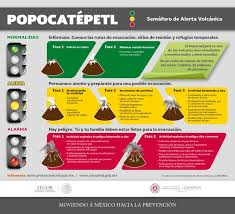
Una erupción volcánica puede ser un acontecimiento impresionante y destructivo. A continuación se indican varios consejos para evitar el peligro y saber qué hacer si te sorprende una erupción. Consejos de seguridad: Mantente alejado de volcanes activos. Si vives cerca de un volcán activo, prepara un kit de emergencia que incluya gafas de seguridad, una máscara, una linterna y una radio en buen estado que funcione con pilas. Elabora una ruta de evacuación y ten el depósito de gasolina del coche siempre lleno. Evacua siguiendo las recomendaciones de las autoridades para no encontrarte lava y barro, así como rocas y escombros que puede arrojar el volcán. Evita zonas de ríos y regiones bajas. Antes de abandonar tu casa, ponte una camisa de manga larga y pantalones largos; usa gafas de seguridad o normales, sin lentillas. Ponte una máscara de emergencia o envuélvete la cara con un paño húmedo. Si no vas a evacuar, cierra puertas y ventanas, y bloquea la chimenea y otros puntos de ventilación para evitar que la ceniza entre en la casa. Ten en cuenta que la ceniza puede sobrecargar el tejado y puedes necesitar retirarla. Durante la limpieza, lleva elementos de protección La ceniza puede dañar motores y piezas metálicas, así que evita conducir. Si debes conducir, no superes los 55 kilómetros por hora. 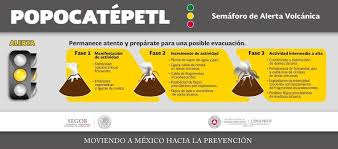
El volcán de colima es un estratovolcán ubicado en los límites de los estados de Colima y Jalisco, en México. El volcán de Colima o volcán de Fuego se eleva entre 3870 y 3940 msnm, y su altura se encuentra en un constante cambio gracias a la constante actividad que ha presentado durante los últimos años; por eso resulta difícil decir con exactitud cuál es en estos momentos..
Ubicación: Su ubicación es al norte de los municipios de Comala y Cuauhtémoc, se encuentra tan sólo una pequeña parte en nuestro Estado y la mayoría se localiza en el estado de Jalisco.
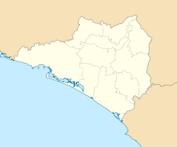El volcán de Colima se ubica a 26 kilómetros al suroeste de Ciudad Guzmán, Jalisco y a 32 kilómetros al noreste de la ciudad de Colima y tiene una elevación de tres mil 860 metros sobre el nivel del mar. De acuerdo al tipo de erupción, la escala de dispersión de ceniza es menor cuando abarca decenas de kilómetros y mayor si llega a cientos de kilómetros. En las características de la caída de ceniza define a la tefra volcánica como la ceniza volcánica con fragmentos de material volcánico también llamado piroclástos con tamaño menor a 2 mm y los denominados Lapilli cuando éstos son de entre 2 y 64 mm.
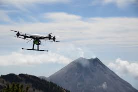Desde agosto pasado el Centro Universitario de la Costa (CUCosta), con sede en Puerto Vallarta, en coordinación con otras dependencias de la Universidad de Guadalajara, como el Centro de cómputo de alto rendimiento (Cencar) y el Centro Universitario de la Costa Sur (CUCSur), en Autlán, así como la Unidad Estatal de Protección Civil Jalisco, monitorean en tiempo real el Volcán de Colima. El responsable del Centro de sismología y vulcanología de occidente (Sisvoc) del CUCosta, Francisco Núñez Cornú, indicó que tras varios años de luchar por el nuevo proyecto, internet 2 será el conducto para que los expertos e involucrados en las dependencias de Protección Civil Jalisco, así como vulcanólogos de todo el mundo, cuenten con datos precisos sobre el comportamiento del Volcán de Fuego.
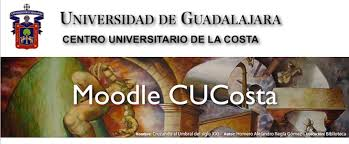 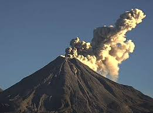
La Coordinación Nacional de Protección Civil, reitera las siguientes recomendaciones en caso de caída de ceniza: Cubrir nariz y boca con un pañuelo húmedo o cubre boca; Limpiar ojos y garganta con agua pura; Utilizar lentes de armazón y evita los lentes de contacto para reducir la irritación ocular; Cerrar ventanas o cubrirlas y permanecer lo más posible dentro de la casa; Limpiar la ceniza acumulada en edificios, suministros de agua y aire, canales, bajadas de las aguas, techos, azoteas, patios y calles. Depositarlas en bolsas y evitar que se vaya al drenaje. Reducir el uso del automóvil ya que conducir sobre ceniza es peligroso para usted y su auto. Cubrir los depósitos de agua y alimentos que consume el ganado. Finalmente es importante señalar que se mantiene permanente comunicación con las autoridades de Protección Civil de las entidades federativas, para la coordinación de las posibles medidas de seguridad que se consideren pertinentes ejecutar para disminuir los efectos adversos para la población.
El Volcán de fuego de colima tiene una altura de 3860 metros sobre el nivel del mar. Formar parte, junto con el nevado Colima, de una cadena volcánica localizada en el Cinturón Neo volcánico Mexicano y cuyas coordenadas geográficas lo sitúan entre los Estados de Colima y Jalisco. En los últimos 500 años, el Volcán de fuego de Colima ha tenido más de 40 erupciones de tipo efusivo y explosivo, entre las que destacan las de 1585, 1606, 1622, 1690, 1818, 1869, 1890, 1903, 1913, 1975-1976,1998-1999 y 2001 -2003. En la actualidad existen, tanto en los Estados de Colima y Jalisco, un número de poblaciones vulnerables ante una posible erupción. Es por eso que debes aprender a convivir con el Volcán y estar preparado para saber qué hacer en caso de una erupción.